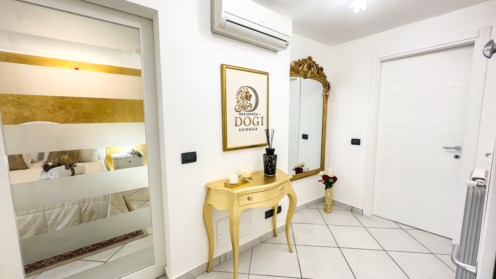
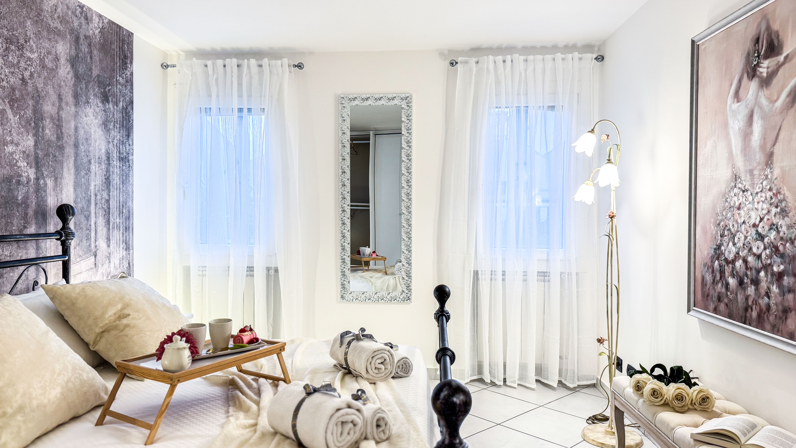

Residenza I Dogi
L'eleganza della tradizione nel cuore di Chioggia
Vivi l’incanto della "Piccola Venezia" soggiornando in
una dimora esclusiva
dove la storia incontra il massimo del comfort
moderno.
Residenza I Dogi
è un appartamento di lusso situato nel pieno centro
storico di Chioggia,
pensato per chi cerca spazio, eleganza e dettagli di
pregio,
dove il lusso incontra la storia offrendo ai nostri
ospiti
un soggiorno avvolto in un’atmosfera di nobile
tranquillità.
"Vivi il fascino dei Dogi, goditi il comfort di
oggi."
Scegliere il nostro
appartamento a Chioggia significa non dover
rinunciare ai comfort di un hotel
pur mantenendo l'indipendenza di una casa privata.
Residenza I Dogi si distingue infatti per la
generosità degli spazi,
ideale per famiglie o coppie di amici che non vogliono
rinunciare alla propria privacy,
mentre ogni dettaglio, dalla pulizia impeccabile alla
scelta dei materiali, è pensato per offrirti
un'esperienza di classe.
Che tu sia qui per una settimana o per un weekend,
goditi il lusso di un contesto d'epoca che ti garantirà
una vacanza indimenticabile.
LA RESIDENZA
La Residenza si compone di un ingresso, una cucina,
due camere da letto e un bagno.
E' dotata di Wi-Fi veloce,
aria condizionata, cassaforte,
riscaldamento autonomo e un prezioso
deposito biciclette privato.
L'INGRESSO
Varcata la soglia, sarai accolto da un ambiente che
respira storia.
• Dettagli d'Oro: Una raffinata consolle dorata e
una maestosa specchiera barocca anticipano
l'eleganza della casa.
• Climatizzazione e Connettività: l'ingresso è il
punto di accesso per il sistema di
aria condizionata e per la rete
Wi-Fi veloce, ideale per chi ha bisogno di
restare sempre connesso.


LA CUCINA
L'eleganza dei dettagli
Vivi l'indipendenza di una casa vacanza di lusso con una cucina completa di design. L'ambiente, impreziosito da un iconico mosaico in foglia d'oro e arredi in stile classico-barocco, offre il massimo del comfort: piano a induzione, forno, microonde e macchina del caffè. Ogni dettaglio è pensato per trasformare un semplice pasto in un'esperienza esclusiva e raffinata.
LE CAMERE
L'appartamento dispone di due ampie camere
matrimoniali
arredate con uno stile lussuoso per garantirvi un riposo
regale in ambienti silenziosi e
climatizzati.
SUITE ORO
Un Sogno Imperiale
Vivi un soggiorno regale in questa suite di lusso, dove l'oro incontra il prezioso vetro di Murano rosso. L'ambiente esclusivo vanta un suggestivo biocamino d'arredo, pareti materiche e scorci artistici di Venezia in cornice dorata. Il massimo relax è garantito da comfort personalizzati: biancheria di pregio e doppi cuscini, classici o ortopedici. Scegli l'eccellenza nel centro storico per un'esperienza sensoriale indimenticabile.


SUITE PALAZZO DUCALE
Un Risveglio da Doge
Sperimenta il fascino della Serenissima in questa suite. Protagonista assoluta è la carta da parati che rievoca i portici del Palazzo Ducale, creando un’atmosfera nobile e profonda. La camera offre un romantico letto in ferro battuto, armadi decorati a mano e dettagli d'autore come specchi e quadri finemente lavorati. Comfort garantito da doppi cuscini per una fuga di coppia di lusso tra storia e design d’eccellenza.
IL BAGNO
Un’oasi di benessere
Il bagno si trasforma in una spa privata grazie all’esclusivo lampadario con cromoterapia: usa il telecomando per cambiare il colore delle luci e vivere una doccia emozionale nel cuore di Chioggia. L'ambiente unisce estetica ricercata e massima funzionalità per il tuo relax. Inclusi nel soggiorno: set di asciugamani, phon e un ricercato kit cortesia di benvenuto. Il massimo del comfort moderno in un'atmosfera di puro benessere.

Nonostante la collocazione nel suggestivo reticolo di
calli,
Residenza I Dogi
vanta una vicinanza
impareggiabile ai principali parcheggi della città
(Saloni, Giove e Park Unione),
permettendovi di arrivare comodamente a pochi passi dal
portone.
Da qui è possibile muoversi facilmente a piedi,
raggiungendo in pochi minuti i principali punti di
interesse,
ristoranti e servizi della città.
La posizione è ideale anche per chi ama spostarsi in
bicicletta,
con percorsi agevoli che conducono direttamente verso il
lungomare e la spiaggia di Sottomarina.
Un equilibrio raro tra fascino storico, praticità e
qualità del soggiorno.